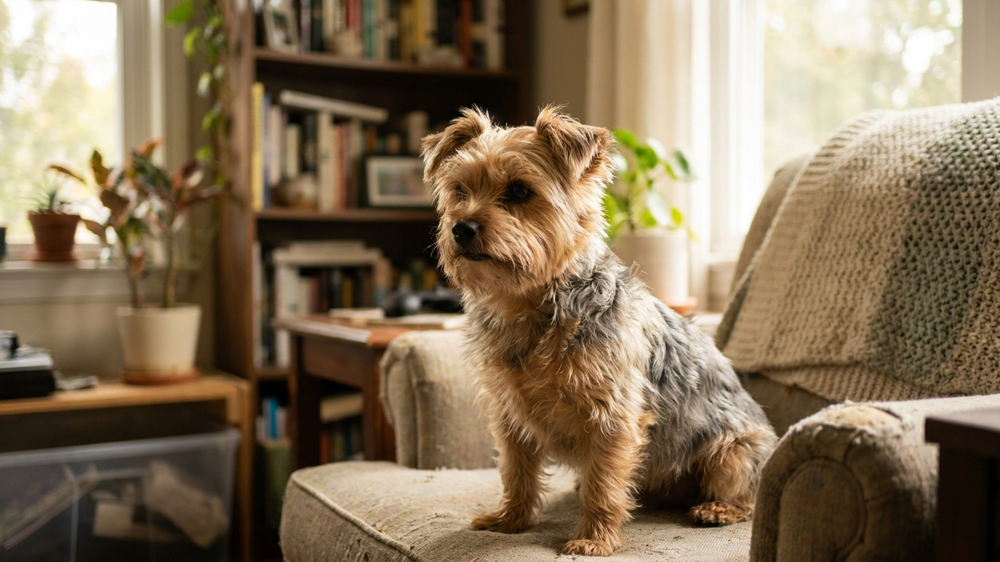

Йоркширский терьер: три мифа о размере и один честный взгляд на характер

13 июня 2026 · 8 минут чтения · Породы собак
На объявлениях пишут «мини», «супер-мини», «чайный» — и цена растёт с каждым уменьшительным суффиксом. Реальность: стандарт породы один, «чайный йорк» — маркетинг, и чем меньше собака, тем выше риски для её здоровья. Йоркширский терьер при весе 2–3 кг ведёт себя как большая собака: характер крепкий, шерсть требовательная, уход — серьёзнее, чем кажется.
Реальный стандарт размера йоркширского терьера
По международному стандарту FCI йоркширский терьер — это собака весом до 3,1 кг. Нижней границы нет — но здоровая взрослая собака весит 2–3 кг. Всё меньше — это либо недорощенный щенок, либо собака с проблемами развития.
- «Мини» и «супер-мини» йорки — не отдельные подвиды. Это просто очень маленькие особи внутри породы, которые продаются дороже стандартных.
- «Чайный» йорк — маркетинговый термин без закрепления в каких-либо кинологических стандартах. Собака весом менее 1,5–1,8 кг — это аномально маленький йоркширский терьер, а не «редкая разновидность».
- Слишком маленькие йорки чаще имеют проблемы с костями, зубами и общей устойчивостью здоровья — обсудите с ветеринаром перед покупкой очень маленького щенка.
Характер йоркширского терьера: это терьер, не игрушка
Йоркширский терьер был выведен как рабочая крысоловная порода на шахтах Йоркшира. Маленький размер — но характер охотника. Новые владельцы нередко удивляются, насколько самостоятельным, упрямым и громким может быть эта маленькая собака.
- Йоркширский терьер склонен к лаю — порода использует голос как рабочий инструмент. Без обучения лай становится неуправляемым.
- Независимость и упрямство — породные черты. Команды нужно прорабатывать с первых месяцев, иначе собака решает сама, что делать и когда.
- Йорк — однолюб: выбирает «своего» человека и ревнует к остальным. Это нормально, но требует работы на социализацию с другими людьми и животными.
- Небольшой размер не означает маленькие потребности в нагрузке: йорку нужны ежедневные прогулки и игры.
Шерсть йоркширского терьера: два типа и реальный уход
Шерсть йорка — шелковистая, растущая почти как волосы человека: не линяет сезонно, но требует постоянного ухода.
- Длинная шёрстная «выставочная» стрижка: расчёсывать ежедневно, мыть раз в неделю. Шерсть на полу — минимальная, зато колтуны образуются быстро.
- Короткая стрижка («под щенка»): стрижка у грумера раз в 6–8 недель. Проще в уходе, комфортнее для собаки в быту.
- Вне зависимости от длины: расчёска с металлическими зубьями плюс щётка с натуральной щетиной — основной инструмент.
- Купание раз в 1–2 недели с шампунем для шелковистой шерсти. После купания — тщательная сушка: промокшая шерсть быстро сваливается.
- Бантик или зажим на чёлке — не только декор: он убирает шерсть с глаз и предотвращает раздражение.
Зубы йоркширского терьера — больная тема породы
Маленький размер челюсти, плотно стоящие зубы — йоркширский терьер входит в топ пород по риску зубного камня и болезней дёсен. Это напрямую влияет на общее здоровье и продолжительность жизни.
- Чистить зубы щёткой или специальной щёточкой на палец: ежедневно в идеале, минимум 3 раза в неделю.
- Зубные лакомства и игрушки для жевания — дополнение, не замена чистке.
- Профессиональная ультразвуковая чистка у ветеринара: раз в год или по рекомендации врача.
- Молочные зубы у йорков нередко не выпадают сами — уточните у ветеринара, нужно ли удаление.
Питание йоркширского терьера: маленькая порция, большие требования
Йоркширский терьер ест немного — но качество корма напрямую влияет на состояние шерсти, зубов и общую энергетику.
- Корм для мелких пород с маленькой гранулой — стандартный выбор. Крупные гранулы трудно жевать маленькой челюстью.
- Кормление 2–3 раза в день. Очень маленькие йорки (до 1,5 кг) могут требовать более частого кормления — уточните у ветеринара.
- Йоркширский терьер предрасположен к гипогликемии (пониженному сахару крови) — особенно щенки и очень маленькие собаки. Не допускайте длительных перерывов между приёмами пищи.
- Омега-кислоты в корме или добавках поддерживают блеск шерсти — конкретный выбор обсудите с ветеринаром.
Здоровье йоркширского терьера: на что обращать внимание
Йоркширский терьер — в целом крепкая порода при правильном уходе, но у неё есть характерные уязвимости.
- Трахея: порода склонна к коллапсу трахеи — используйте шлейку вместо ошейника, чтобы не создавать давления на шею при рывках.
- Коленные суставы: вывих надколенника встречается у мелких пород. Следите: собака периодически «прыгает на трёх лапах» — это повод к ветеринару.
- Глаза: проверяйте регулярно — шерсть на морде может раздражать роговицу, если не подвязывать.
- Плановые осмотры: раз в год до 7 лет, раз в полгода после.
Йоркширский терьер и дети
Маленькая собака — хрупкая собака. Ребёнок, который не умеет обращаться осторожно, может травмировать йоркширского терьера непреднамеренно. Это не значит «не заводить», но означает чёткие правила.
- Детей нужно учить: не брать йорка без разрешения, не тянуть за шерсть, не бросать и не ронять.
- Йоркширский терьер может огрызнуться, если ему больно или страшно — это защитная реакция, не агрессия.
- Взаимодействие маленьких детей с собакой — только под наблюдением взрослых.
🐾 Питомец ведёт себя странно?
AnimaLife расшифрует поведение кошки и собаки и подскажет, что делать. Попробуйте бесплатно прямо в мессенджере.
Открыть в Telegram → Открыть в MAX →
🐾 Понравился разбор?
Подпишитесь на канал — каждый день разбираем по одному тревожному симптому у кошек и собак: что в пределах нормы, а когда пора к врачу. Подпишитесь, чтобы не пропустить разбор, который может спасти здоровье вашего питомца.
Материал носит информационный характер и не заменяет очную консультацию ветеринара.
← Все статьи · Открыть AnimaLife в Telegram · RSS